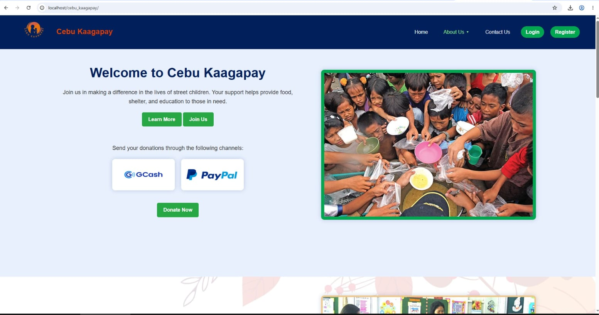
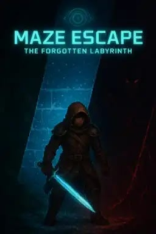

Fourth-year BSIT student · Cebu City, Philippines
Joseph Pescadero Janiola
Aspiring Software Developer
I’m a technology student building my foundation in software development and exploring how thoughtful digital tools can solve real-world problems.
Curious by nature. Building with purpose.
01 / A little about me
Learning today.
Building for tomorrow.
I’m Joseph, a 22-year-old fourth-year Bachelor of Science in Information Technology student at Cebu Eastern College, Incorporated in Cebu City, Philippines.
I’m passionate about software development, technology, and solving real-world problems. Through my studies and academic projects, I’m continuing to learn how ideas become useful, accessible digital experiences.
Currently focused on learning, collaborating, and developing projects as part of my IT journey.
02 / What I’m learning
Skills & tools
Technologies and tools I have worked with or use in my academic projects. No proficiency ratings are assumed.
Web development projects
- LibAI AI-Powered Smart Library System
- Cebu Kaagapay Academic Web Development Project
Database development
XAMPP — local server and database development environment
Development tools
03 / Selected work
Projects in progress
Academic work and ideas I’m developing through my studies.
 LIBAI · PROJECT SCREENSHOT
LIBAI · PROJECT SCREENSHOT
CAPSTONE PROJECT In Development
LibAI
An AI-powered smart library concept designed to make library services more accessible and useful to its community.
01
Proposed RFID-based inventory management
02
AI-powered book recommendations
03
Mobile-accessible library services
Features are proposed as part of the project concept and may evolve during development.

CEBU KAAGAPAY · PROJECT SCREENSHOTACADEMIC PROJECT Project showcase
Cebu Kaagapay
A community assistance website featuring tools to help manage services and support the organization’s work.
Features — User login, community assistance management, admin dashboard, and database management
Technologies — HTML, CSS, JavaScript, PHP, MySQL, XAMPP, VS Code, and GitHub
My contribution — Helped develop the website, design the user interface, integrate the database, and test and debug the system
Project screenshot from Cebu Kaagapay.

MAZE ESCAPE · PROJECT PREVIEWGAME PROJECT Project showcase
Maze Escape
A maze-escape game project titled The Forgotten Labyrinth.
Gameplay features — Randomly generated mazes, three stages (Forest, Snowland, and Volcano), enemy combat, boss battles, equipment upgrades, key collection, and saved progress
Technologies — HTML, CSS, JavaScript, HTML5 Canvas, and Web Audio API
My contribution — Developed maze generation, combat, enemy AI, boss battles, inventory, and the game interface; implemented stage progression, character upgrades, and save/load functionality
The game features three themed stages: Forest, Snowland, and Volcano.
04 / My academic path
Education
A timeline of my formal education.
2016–2017
Budlaan Integrated School
Elementary
2020–2021
Budlaan Integrated School
Junior High
2022–2023
Talamban National High School
Senior High
2023–Present
Cebu Eastern College, Incorporated
Bachelor of Science in Information Technology (BSIT)
05 / Professional development
Certifications
I don’t have any certifications yet. This section can be updated as I earn them.
06 / Get in touch
Let’s connect.
Interested in connecting about technology, learning, or my academic projects? Find me through the links below.